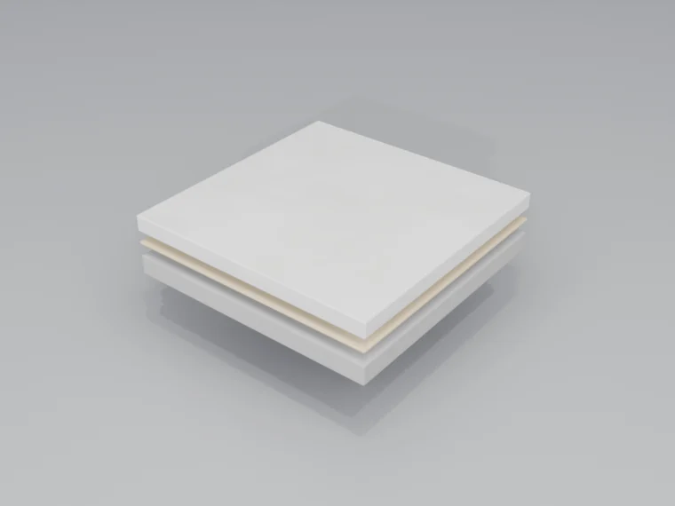

ציפוי ציאמנט דק במיוחד, משופר-פולימר, ההופך משטחים קיימים לרצפות עכשוויות וחלקות ללא תפרים. בחירת האדריכל למרחבים מינימליסטיים בעלי אופי תעשייתי.
היכן המיקרו-טופינג מצטיין
מיקרו-טופינג יוצר משטחים רציפים וזורמים המגדירים מרחבים אדריכליים מודרניים. העובי המזערי שלו הופך אותו לאידיאלי לפרויקטי שיפוץ שבהם גובה הרצפה הוא קריטי.
מגורים יוקרתיים
אזורי מגורים, מטבחים, חדרי רחצה. רצף משטח אחיד בכל הבית. תואם לחימום תת-רצפתי.
קמעונאות ואולמות תצוגה
רקע נייטרלי המאפשר למוצרים לבלוט. תחזוקה נוחה לסביבות קמעונאיות בתנועה גבוהה.
אירוח
מלונות, מסעדות, בתי קפה. יוצר אווירה מתוחכמת עם גוון תעשייתי.
פרויקטי שיפוץ
ציפוי מעל אריחים, בטון או שכבות יישור קיימים ללא הריסה. הגבהת רצפה מזערית.
הכנת התשתית
המיקרו-טופינג דק (2-3 מ"מ), ולכן פגמי התשתית מבצבצים דרכו. הכנת פני השטח קובעת את האיכות הסופית.
- אריחים קיימים — ניתן לצפות מעליהם אם הם יציבים. קווי הרובה מולאו, פני השטח חוספסו להיאחזות
- בטון — חייב להיות שטוח, נקי מציפת מלט (laitance), עם סדקים מלאים בחומר גמיש
- שכבות יישור — תרכובת פיזור עצמי מיושמת להשגת השטחות הנדרשת (SR1-SR2)
- פריימר היאחזות — פריימר ייעודי למערכת מבטיח היאחזות למגוון תשתיות
- גישור סדקים — רשת סיבי-זכוכית מוטמעת במישקי תזוזה ומעל סדקים מלאים
תהליך היישום
המיקרו-טופינג מיושם במספר שכבות דקות, כל אחת מעובדת ביד ליצירת המרקם והאופי הרצויים.

שכבת בסיס
שכבת ציאמנט ראשונה משופרת-פולימר, מיושמת במרית. בונה את היסוד, ממלאת פגמים קלים. רשת סיבי-זכוכית מוטמעת במידת הצורך.
שכבת גימור
שכבה דקורטיבית דקה, מיושמת ומעובדת ביד ליצירת המרקם הרצוי — מחלק ועד מגוון, בהתאם לטכניקה ולכלים שבשימוש.
מערכת איטום
שכבת איטום פוליאוריתן או אפוקסי דו-רכיבית מעניקה עמידות לכתמים ועמידות לאורך זמן. מגוון רמות ברק: מט, סטין או מבריק.
אפשרויות גימור
כל רצפת מיקרו-טופינג ניתנת להתאמה אישית להשגת המראה האסתטי הרצוי:
ציאמנט טבעי
גווני אפור קלאסיים עם שונות עדינה. אסתטיקה גולמית ותעשייתית.
גוון מעורב
פיגמנטים משולבים יוצרים גוונים חמים או קרים — מפחם ועד טאופ חם.
אפקט ענן
סימני מרית מכוונים יוצרים תנועה ועומק. אופי מלאכת-יד.
אחיד
יישום בהתזה למראה אחיד ועקבי יותר. מודרני ומינימלי.
יתרונות מרכזיים
- עובי מזערי — 2-3 מ"מ בלבד. ללא קיצור דלתות, ללא בעיות מעבר, ללא שינויי גובה רצפה.
- רציפות ללא תפרים — ללא מישקים, ללא קווי רובה. המשטח זורם ברציפות מחדר לחדר.
- ידידותי לשיפוץ — ציפוי מעל רצפות קיימות ללא הריסה. מהיר, נקי ופחות מטריד.
- אופי ייחודי — גימור מלאכת-יד מיושם ידנית. כל רצפה היא חד-פעמית עם שונות טבעית.
- חימום תת-רצפתי — מוליכות תרמית מצוינת. דק יותר מאריחים לתגובת חום מהירה יותר.
- יישום רב-תכליתי — רצפות, קירות, מדרגות, משטחי עבודה — שפת חומר מאוחדת בכל המרחב.
פרוטוקול תחזוקה
מיקרו-טופינג אטום כראוי הוא עמיד וקל לתחזוקה. שכבת האיטום עושה את העבודה הקשה — מגנה על פני הציאמנט מכתמים ומבלאי.
יומי
טאטוא או שאיבה להסרת גרגרים. ניגוב בסמרטוט לח לפי הצורך עם חומר ניקוי בעל pH נייטרלי.
שבועי
שטיפה בסמרטוט רטוב עם חומר ניקוי מומלץ-יצרן. הימנעו ממוצרים חומציים או שוחקים.
שנתי
בדקו את מצב שכבת האיטום. אזורים בתנועה גבוהה עשויים להזדקק לשכבת תחזוקה כל 2-3 שנים.
לפי הצורך
תיקונים נקודתיים אפשריים לנזק מקומי. איטום מחדש מלא מומלץ כל 5-7 שנים.

{kind=link}
{kind=link}
{kind=link}
{kind=link}
{kind=link}
{kind=link}
{kind=link}
{kind=link}
{kind=link}
{kind=link}
{kind=link}